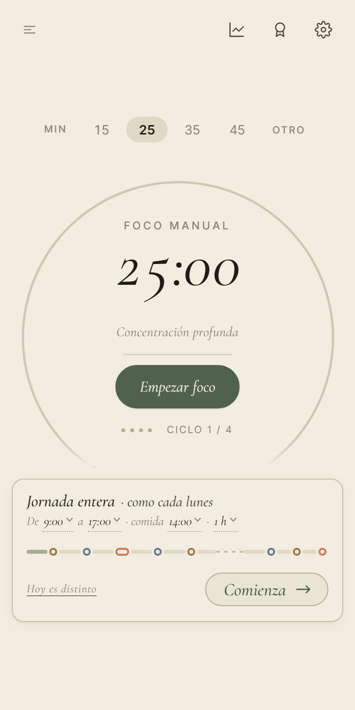
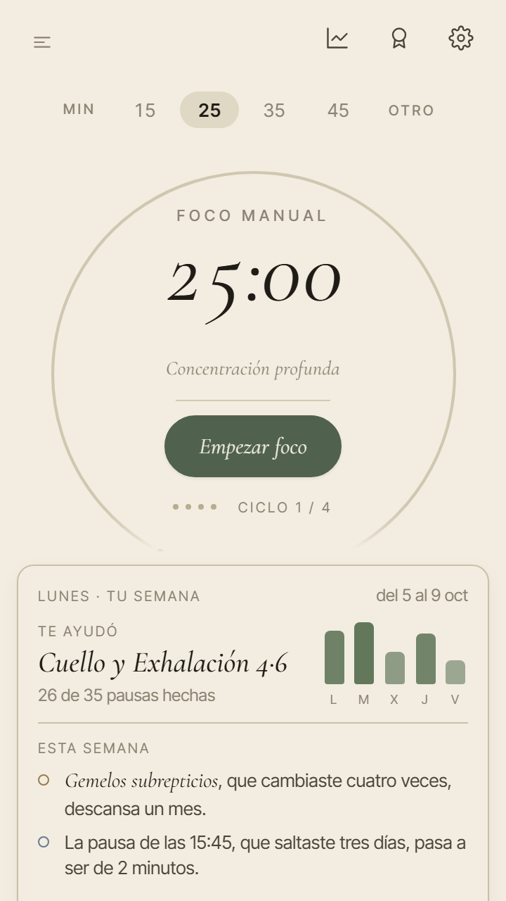
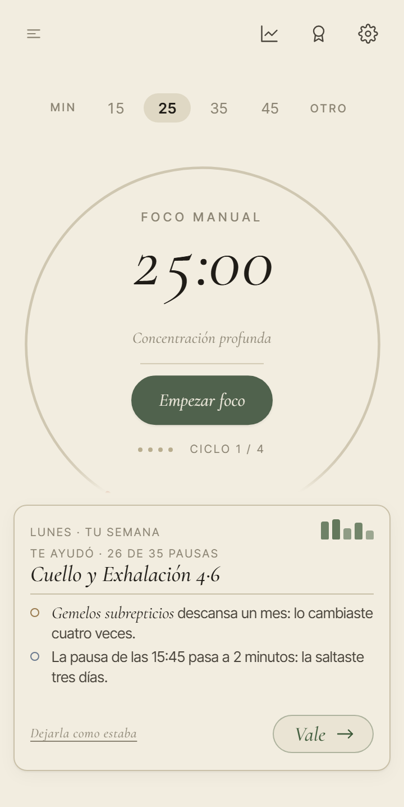
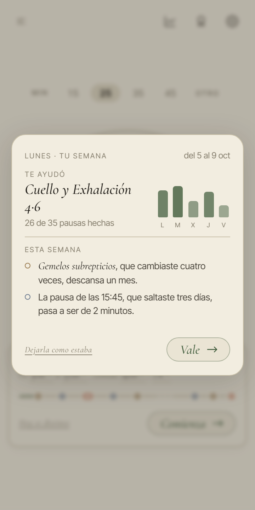
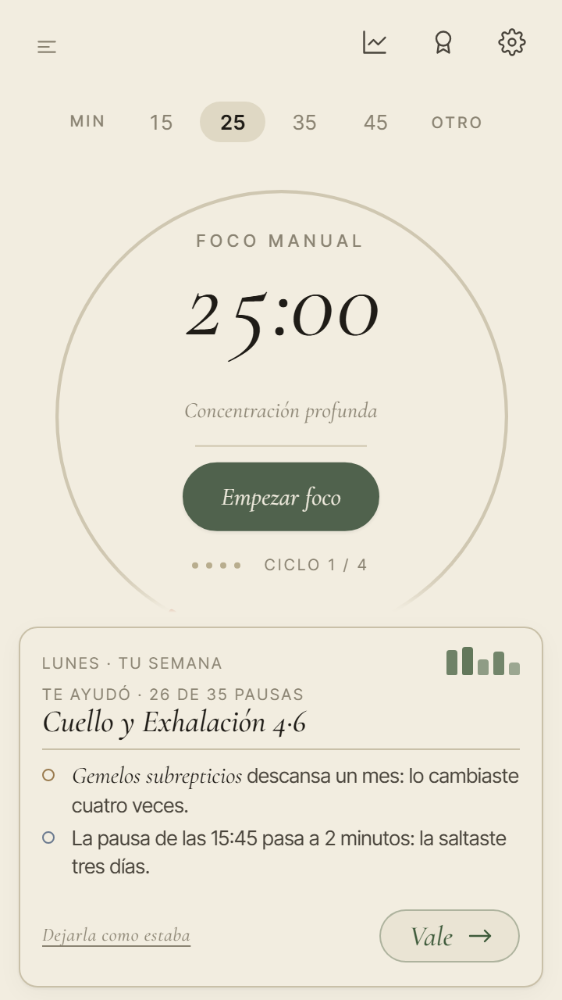
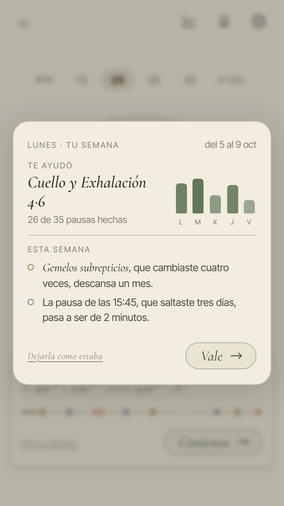
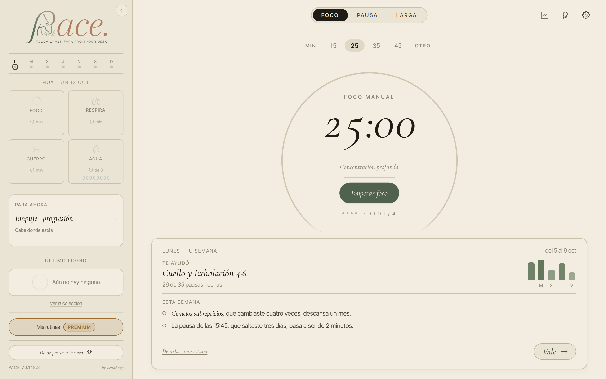
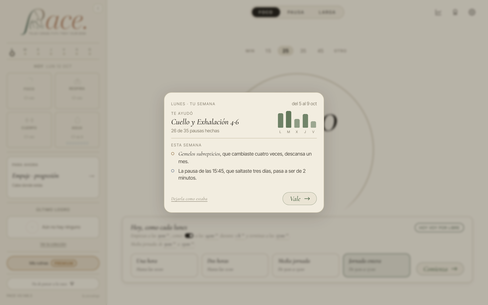

<title>La semana que aprende</title>
<link rel="preconnect" href="https://fonts.googleapis.com">
<link rel="preconnect" href="https://fonts.gstatic.com" crossorigin>
<link rel="stylesheet" href="https://fonts.googleapis.com/css2?family=Cormorant+Garamond:ital,wght@1,400;1,500&family=Inter+Tight:wght@400;500;600&display=swap">
<style>
/* Una sola columna de lectura, como una carta larga de PACE; las fotos se abren a varias columnas cuando hay ancho. Colores y letras, los de la app. */
:root {
  --paper: #F2EDE0; --paper-2: #EAE4D4;
  --ink: #1F1C17; --ink-2: #4A453C; --ink-3: #6F695B;
  --line: #D6CDB6;
  --focus: #3E5A3A; --breathe: #C97A5D; --move: #9A7B4F; --extra: #6B7A8F;
  --mark: rgba(62, 90, 58, 0.10);
  --serif: 'Cormorant Garamond', Georgia, 'Times New Roman', serif;
  --sans: 'Inter Tight', system-ui, -apple-system, 'Segoe UI', sans-serif;
  color-scheme: light;
}
@media (prefers-color-scheme: dark) {
  :root:not([data-theme="light"]) {
    --paper: #1d1a14; --paper-2: #26211a;
    --ink: #EDE5D3; --ink-2: #c0b49e; --ink-3: #B2A995; --line: #4d4536;
    --focus: #98B58B; --breathe: #E8A98F; --move: #C9A877; --extra: #9FB0C6;
    --mark: rgba(152, 181, 139, 0.14);
    color-scheme: dark;
  }
}
:root[data-theme="dark"] {
  --paper: #1d1a14; --paper-2: #26211a;
  --ink: #EDE5D3; --ink-2: #c0b49e; --ink-3: #B2A995; --line: #4d4536;
  --focus: #98B58B; --breathe: #E8A98F; --move: #C9A877; --extra: #9FB0C6;
  --mark: rgba(152, 181, 139, 0.14);
  color-scheme: dark;
}
* { box-sizing: border-box; }
body { background: var(--paper); color: var(--ink); font-family: var(--sans); font-size: 16px; line-height: 1.55; }
.hoja { max-width: 820px; margin: 0 auto; padding-inline: 20px; padding-block: 40px 72px; display: flex; flex-direction: column; gap: 44px; }
h1, h2, h3 { font-family: var(--serif); font-style: italic; font-weight: 500; text-wrap: balance; margin: 0; color: var(--ink); }
h1 { font-size: clamp(38px, 7vw, 54px); line-height: 1.02; }
h2 { font-size: 30px; line-height: 1.1; }
h3 { font-size: 22px; line-height: 1.15; }
p { margin: 0; max-width: 66ch; }
b { font-weight: 600; }
.cap { font-size: 11px; letter-spacing: .14em; text-transform: uppercase; color: var(--ink-3); font-weight: 500; }
.sec { display: flex; flex-direction: column; gap: 16px; }
.sec + .sec { border-top: 1px solid var(--line); padding-top: 40px; }
.entrada { display: flex; flex-direction: column; gap: 14px; }
.entrada > p { font-size: 18px; color: var(--ink-2); }
.resumen { display: grid; grid-template-columns: repeat(2, minmax(0, 1fr)); gap: 1px; background: var(--line); border: 1px solid var(--line); border-radius: 12px; overflow: hidden; }
.resumen > div { background: var(--paper-2); padding: 14px 16px; display: flex; flex-direction: column; gap: 4px; min-width: 0; }
.resumen strong { font-family: var(--serif); font-style: italic; font-weight: 500; font-size: 21px; line-height: 1.15; }
.resumen span { font-size: 14px; color: var(--ink-2); }
.fotos { display: grid; grid-template-columns: repeat(4, minmax(0, 1fr)); gap: 14px; align-items: start; }
.fotos.tres { grid-template-columns: repeat(3, minmax(0, 1fr)); }
.fotos.dos { grid-template-columns: repeat(2, minmax(0, 1fr)); }
.fotos.estrecha { max-width: 440px; }
figure { margin: 0; display: flex; flex-direction: column; gap: 8px; min-width: 0; }
figure img { width: 100%; height: auto; border: 1px solid var(--line); border-radius: 10px; display: block; background: var(--paper-2); }
figcaption { font-size: 13px; color: var(--ink-3); line-height: 1.4; }
figcaption b { color: var(--ink); }
.mal { color: var(--breathe); font-weight: 600; }
.bien { color: var(--focus); font-weight: 600; }
.cosas { display: flex; flex-direction: column; border-top: 1px solid var(--line); }
.cosa { display: grid; grid-template-columns: 34px minmax(0, 1fr); gap: 4px 14px; padding: 18px 0; border-bottom: 1px solid var(--line); }
.cosa .n { font-family: var(--serif); font-style: italic; font-size: 26px; line-height: 1; color: var(--ink-3); }
.cosa > div { display: flex; flex-direction: column; gap: 6px; min-width: 0; }
.cosa .dice { font-family: var(--serif); font-style: italic; font-size: 18px; color: var(--ink); border-left: 2px solid var(--line); padding-left: 12px; }
.tabla { overflow-x: auto; border: 1px solid var(--line); border-radius: 10px; }
table { border-collapse: collapse; width: 100%; min-width: 560px; font-size: 14px; }
th, td { text-align: left; vertical-align: top; padding: 10px 12px; border-bottom: 1px solid var(--line); }
th { font-size: 11px; letter-spacing: .12em; text-transform: uppercase; color: var(--ink-3); font-weight: 500; background: var(--paper-2); }
tr:last-child td { border-bottom: 0; }
.reglas { margin: 0; padding: 0; list-style: none; display: flex; flex-direction: column; gap: 10px; }
.reglas li { display: grid; grid-template-columns: 18px minmax(0, 1fr); gap: 10px; }
.reglas li::before { content: ''; width: 8px; height: 8px; margin-top: 8px; border-radius: 50%; border: 1.5px solid var(--focus); }
.semana { display: grid; grid-template-columns: 22px minmax(0, 1fr); gap: 10px 12px; align-items: center; background: var(--paper-2); border: 1px solid var(--line); border-radius: 12px; padding: 16px; }
.semana .d { font-size: 12px; letter-spacing: .12em; color: var(--ink-3); }
.fila { display: flex; flex-wrap: wrap; gap: 8px; }
.p { width: 22px; height: 22px; border-radius: 50%; border: 1.5px solid var(--c, var(--ink-3)); }
.p.larga { width: 36px; border-radius: 11px; }
.p.cambia { background: var(--c); box-shadow: 0 0 0 2px var(--paper-2), 0 0 0 3.5px var(--ink); }
.leyenda { display: flex; flex-wrap: wrap; gap: 6px 16px; font-size: 13px; color: var(--ink-2); }
.leyenda span { display: inline-flex; align-items: center; gap: 6px; }
.leyenda i { width: 11px; height: 11px; border-radius: 50%; border: 1.5px solid var(--c); display: inline-block; }
.leyenda i.l { width: 20px; border-radius: 6px; }
.leyenda i.c { background: var(--ink); border-color: var(--ink); }
.cartas { display: grid; grid-template-columns: repeat(2, minmax(0, 1fr)); gap: 16px; align-items: start; }
.ejemplo { display: flex; flex-direction: column; gap: 8px; min-width: 0; }
.carta { background: var(--paper-2); border: 1px solid var(--line); border-radius: 14px; padding: 16px; display: flex; flex-direction: column; gap: 11px; font-size: 13.5px; }
.carta.vacia { border-style: dashed; background: transparent; color: var(--ink-3); font-size: 14px; min-height: 120px; justify-content: center; }
.carta .top { display: flex; justify-content: space-between; align-items: baseline; gap: 8px; }
.carta .fecha { font-size: 12px; color: var(--ink-3); }
.carta .ayudo { display: grid; grid-template-columns: minmax(0, 1fr) 92px; gap: 12px; align-items: end; }
.carta .nombre { font-family: var(--serif); font-style: italic; font-weight: 500; font-size: 21px; line-height: 1.12; }
.carta .gris { font-size: 12px; color: var(--ink-3); }
.barras { display: flex; align-items: flex-end; gap: 4px; height: 54px; }
.barras div { flex: 1; display: flex; flex-direction: column; align-items: center; justify-content: flex-end; gap: 4px; height: 100%; }
.barras b { width: 12px; border-radius: 4px 4px 2px 2px; background: var(--focus); opacity: .75; display: block; }
.barras span { font-size: 9px; letter-spacing: .12em; color: var(--ink-3); }
.carta .cambios { border-top: 1px solid var(--line); padding-top: 10px; display: flex; flex-direction: column; gap: 6px; }
.carta .cambio { display: grid; grid-template-columns: 10px minmax(0, 1fr); gap: 9px; align-items: baseline; color: var(--ink-2); line-height: 1.4; }
.carta .cambio i { width: 8px; height: 8px; border-radius: 50%; border: 1.5px solid var(--c, var(--ink-3)); display: block; transform: translateY(-1px); }
.carta .it { font-family: var(--serif); font-style: italic; font-size: 15px; color: var(--ink); }
.carta .pie { display: flex; justify-content: space-between; align-items: center; gap: 8px; }
.carta .enlace { font-family: var(--serif); font-style: italic; font-size: 15px; color: var(--ink-3); text-decoration: underline; text-underline-offset: 3px; }
.carta .boton { font-family: var(--serif); font-style: italic; font-size: 17px; color: var(--focus); border: 1px solid var(--focus); border-radius: 17px; padding: 3px 16px; margin-left: auto; }
.nota { font-size: 14px; color: var(--ink-3); }
.reco { background: var(--mark); border-radius: 12px; padding: 16px 18px; display: flex; flex-direction: column; gap: 8px; }
.reco .cap { color: var(--focus); }
.preguntas { margin: 0; padding-left: 24px; display: flex; flex-direction: column; gap: 14px; }
.preguntas li { padding-left: 4px; }
.preguntas li::marker { font-family: var(--serif); font-style: italic; color: var(--ink-3); }
.preguntas .op { display: block; font-size: 14px; color: var(--ink-3); margin-top: 3px; }
@media (max-width: 680px) {
  .fotos { grid-template-columns: repeat(2, minmax(0, 1fr)); }
  .fotos.tres { grid-template-columns: repeat(2, minmax(0, 1fr)); }
  .fotos.dos, .cartas, .resumen { grid-template-columns: minmax(0, 1fr); }
}
</style>

<main class="hoja">

<header class="entrada">
  <span class="cap">PACE · «A tu ritmo» semanal · propuesta para Ez · 8 oct. 2026</span>
  <h1>La semana que aprende</h1>
  <p>Lo de pago de «A tu ritmo»: cada lunes, PACE mira cómo fue tu semana, cambia una o dos cosas de la que empieza y te lo cuenta en una carta corta. Aquí está qué aprende, de qué datos, cuánto cambia y cómo te lo dice. Todavía no hay código: las fotos llevan la carta pegada encima de la app real. Las preguntas van al final.</p>
  <div class="resumen">
    <div><strong>Aprende cuatro cosas</strong><span>Qué te sienta bien, qué pausas saltas, qué cambias con «Otra» y a qué horas trabajas de verdad.</span></div>
    <div><strong>Con lo que ya guarda tu móvil</strong><span>Más una pieza nueva: un resumen de cada día. Nada sale del dispositivo.</span></div>
    <div><strong>Como mucho dos cambios</strong><span>Y entre los dos tocan como mucho 10 de las 40 paradas de una semana de jornada entera.</span></div>
    <div><strong>Te lo cuenta el lunes</strong><span>Una vez, al abrir PACE. Nada cambia sin tu «Vale», y todo se puede deshacer.</span></div>
  </div>
</header>

<section class="sec">
  <span class="cap">Antes y después · fotos de la app real (v0.148.3)</span>
  <h2>El lunes por la mañana, en el móvil</h2>
  <p>La carta que aceptaste en la maqueta de la semana (la R2) no cabe entera en el sitio de la tarjeta: a 360 × 718, el móvil de Ez, sobra 1 px, y a 360 × 640 el botón «Vale» se queda 59 px fuera, aunque el aro encoja todo lo que puede. Como la home no puede hacer scroll, propongo dos sitios.</p>
  <div class="fotos">
    <figure><figcaption><b>Hoy.</b> «Jornada entera · como cada lunes». 360 × 718.</figcaption></figure>
    <figure><figcaption><b>La carta de la R2, tal cual.</b> A 360 × 640, <span class="mal">«Vale» queda fuera</span>.</figcaption></figure>
    <figure><figcaption><b>A · En la tarjeta, más corta.</b> Las barras suben a la cabecera y cada cambio es una frase. 360 × 718.</figcaption></figure>
    <figure><figcaption><b>B · En una ventana, entera.</b> El mismo marco que las ventanas de la app. 360 × 718.</figcaption></figure>
  </div>
  <div class="fotos dos estrecha">
    <figure><figcaption><b>A a 360 × 640.</b> <span class="bien">Cabe</span>, pero justa: el aro ya está casi en su mínimo y no queda margen para una línea más (en inglés, por ejemplo).</figcaption></figure>
    <figure><figcaption><b>B a 360 × 640.</b> <span class="bien">Cabe con holgura</span> (333 px de alto) y lo dice todo, también las cinco barras.</figcaption></figure>
  </div>
  <h3>En escritorio cabe en los dos sitios</h3>
  <div class="fotos dos">
    <figure><figcaption><b>En la tarjeta.</b> 1280 × 800, sin recortar nada.</figcaption></figure>
    <figure><figcaption><b>En una ventana.</b> 1280 × 800.</figcaption></figure>
  </div>
  <div class="reco">
    <span class="cap">Recomendación</span>
    <p><b>B, la ventana, en el móvil y en escritorio.</b> Sale una vez a la semana, cabe en todas las pantallas sin recortar nada y lleva la carta entera que elegiste, con sus barras y el porqué de cada cambio. La A obliga a acortar la carta y cabe sin un píxel de margen a 360 × 640.</p>
  </div>
</section>

<section class="sec">
  <span class="cap">Qué aprende</span>
  <h2>Cuatro cosas, y cada una cambia algo concreto</h2>
  <p>Cada cosa que aprende tiene una sola manera de notarse en tu semana. Si no sabe qué cambiar con algo, no lo aprende.</p>
  <div class="cosas">
    <div class="cosa"><span class="n">1</span><div>
      <h3>Qué te sienta bien</h3>
      <p>Lo saca de tus «¿Te ayudó?». Lo que te ayudó se queda en su sitio y vuelve antes en la semana. Lo que dijiste que no te ayudó descansa cuatro semanas y luego vuelve a probarse, como ya hace la pausa.</p>
      <span class="dice">«Te ayudó: Cuello y Exhalación 4·6.»</span>
    </div></div>
    <div class="cosa"><span class="n">2</span><div>
      <h3>Qué pausas saltas</h3>
      <p>Si la pausa de la misma hora se queda sin hacer tres días de la semana, la semana siguiente es más corta (2 minutos). No la quita: una tarde sin ninguna pausa es justo lo que PACE quiere evitar.</p>
      <span class="dice">«La pausa de las 15:45, que saltaste tres días, pasa a ser de 2 minutos.»</span>
    </div></div>
    <div class="cosa"><span class="n">3</span><div>
      <h3>Qué cambias con «Otra»</h3>
      <p>Si cambias una rutina tres veces o más, descansa un mes. Si casi siempre cambias Mueve por otra cosa, la semana trae menos Mueve y más Estira.</p>
      <span class="dice">«Gemelos subrepticios, que cambiaste cuatro veces, descansa un mes.»</span>
    </div></div>
    <div class="cosa"><span class="n">4</span><div>
      <h3>A qué horas trabajas de verdad</h3>
      <p>Si un día de la semana empiezas o terminas siempre media hora o más lejos de tus horas, te lo pregunta. Esto no cambia nunca solo, porque son tus ajustes.</p>
      <span class="dice">«Los lunes empiezas a las 9:40. ¿Pongo tu entrada de los lunes a las 9:40?»</span>
    </div></div>
  </div>
  <p class="nota">Con el calendario conectado, una pausa que no hiciste porque te pilló una reunión no cuenta como saltada. Sin calendario, el motor funciona igual: el calendario solo sirve para no culparte de lo que no dependía de ti.</p>
</section>

<section class="sec">
  <span class="cap">Con qué datos</span>
  <h2>Casi todo ya se guarda; falta el resumen de cada día</h2>
  <p>Todo vive en tu móvil o en tu navegador, sin servidor. Entra en la copia de «Tus datos» y se borra con «Borrar mis datos». El registro guarda 120 días, y el motor solo mira las cuatro últimas semanas.</p>
  <div class="tabla">
    <table>
      <thead><tr><th>Dato</th><th>¿Se guarda hoy?</th><th>Para qué lo usa</th></tr></thead>
      <tbody>
        <tr><td>«¿Te ayudó?» (Sí, Un poco, No)</td><td><span class="bien">Sí</span>, con su fecha</td><td>1 · Qué te sienta bien</td></tr>
        <tr><td>Cada pausa hecha, a qué hora y si era la que servía «A tu ritmo»</td><td><span class="bien">Sí</span></td><td>2 y 4 · Pausas saltadas y horas reales</td></tr>
        <tr><td>Hora del primer y del último bloque de foco</td><td><span class="bien">Sí</span></td><td>4 · Horas reales</td></tr>
        <tr><td>Qué pausas sirvió el día y cuáles se saltaron</td><td><span class="mal">Solo hoy</span>: se pierde al cambiar de día</td><td>2 · Pausas saltadas</td></tr>
        <tr><td>Cada «Otra»: qué rutina se cambió</td><td><span class="mal">Solo hoy</span></td><td>3 · Lo que cambias</td></tr>
        <tr><td>Minutos de reunión a la hora de cada pausa</td><td><span class="mal">Solo hoy</span>, sin títulos</td><td>No culparte de una pausa que no podías hacer</td></tr>
      </tbody>
    </table>
  </div>
  <div class="reco">
    <span class="cap">Lo nuevo</span>
    <p><b>El resumen del día.</b> Al cambiar de día, PACE guarda una línea por cada pausa que sirvió: la hora, el módulo, la rutina y qué pasó con ella (hecha, saltada, cambiada o sin tocar), y cuántos minutos de reunión la pisaban. Nada más: ni textos tuyos ni títulos del calendario. Es invisible y se puede empezar a guardar ya, aunque el motor llegue después.</p>
  </div>
</section>

<section class="sec">
  <span class="cap">Cuánto cambia</span>
  <h2>Medido antes: lo que da de sí una semana</h2>
  <p>Con el horario de fábrica (de 9:00 a 17:00 y comida a las 14:00), una jornada entera sirve <b>7 pausas y un cierre</b>: <b>40 paradas</b> de lunes a viernes, con 47 rutinas porque la pausa larga lleva dos. Salen <b>13 rutinas distintas</b>, porque lo que cabe junto a la mesa es poco: 6 de Estira, 5 de Mueve, 5 de Respira y 1 de cierre. «¿Te ayudó?» sale una vez por rutina y día, así que cada rutina recibe como mucho cinco respuestas a la semana, y solo si la haces y contestas todos los días.</p>
  <p>Así queda la semana del 12 de octubre con los dos cambios de la carta de ejemplo. Cada círculo es una parada del día, en su orden, de las 9:45 a las 16:55:</p>
  <div class="semana" role="img" aria-label="Cinco filas, de lunes a viernes, con ocho paradas cada una. Cambian nueve: las cuatro de Gemelos subrepticios y las cinco pausas de las 15:45.">
    <span class="d">L</span><div class="fila"><span class="p cambia" style="--c: var(--move)" title="9:45 · Gemelos subrepticios"></span><span class="p" style="--c: var(--extra)" title="10:35 · Escritorio express"></span><span class="p larga" style="--c: var(--ink-3)" title="11:25 · Exhalación 4·6 + Cuello"></span><span class="p" style="--c: var(--extra)" title="12:25 · Muñecas y manos"></span><span class="p" style="--c: var(--move)" title="13:15 · Glúteos invisibles"></span><span class="p cambia" style="--c: var(--extra)" title="15:45 · Hombros · círculos"></span><span class="p" style="--c: var(--move)" title="16:20 · Grip + antebrazos"></span><span class="p" style="--c: var(--breathe)" title="16:55 · Suspiro fisiológico"></span></div>
    <span class="d">M</span><div class="fila"><span class="p" style="--c: var(--extra)" title="9:45 · Escritorio express"></span><span class="p cambia" style="--c: var(--move)" title="10:35 · Gemelos subrepticios"></span><span class="p larga" style="--c: var(--ink-3)" title="11:25 · Exhalación 4·6 + Cuello"></span><span class="p" style="--c: var(--extra)" title="12:25 · Muñecas y manos"></span><span class="p" style="--c: var(--move)" title="13:15 · Glúteos invisibles"></span><span class="p cambia" style="--c: var(--extra)" title="15:45 · Hombros · círculos"></span><span class="p" style="--c: var(--move)" title="16:20 · Grip + antebrazos"></span><span class="p" style="--c: var(--breathe)" title="16:55 · Suspiro fisiológico"></span></div>
    <span class="d">X</span><div class="fila"><span class="p" style="--c: var(--extra)" title="9:45 · Escritorio express"></span><span class="p larga" style="--c: var(--ink-3)" title="10:35 · Exhalación 4·6 + Cuello"></span><span class="p" style="--c: var(--extra)" title="11:35 · Muñecas y manos"></span><span class="p" style="--c: var(--extra)" title="12:25 · Caderas de pie"></span><span class="p larga" style="--c: var(--ink-3)" title="13:15 · Diafragmática + Cadena posterior de pie"></span><span class="p cambia" style="--c: var(--extra)" title="15:45 · Hombros · círculos"></span><span class="p larga" style="--c: var(--ink-3)" title="16:15 · Coherente 5·5 + Escritorio express"></span><span class="p" style="--c: var(--breathe)" title="16:55 · Suspiro fisiológico"></span></div>
    <span class="d">J</span><div class="fila"><span class="p" style="--c: var(--extra)" title="9:45 · Escritorio express"></span><span class="p cambia" style="--c: var(--move)" title="10:35 · Gemelos subrepticios"></span><span class="p larga" style="--c: var(--ink-3)" title="11:25 · Exhalación 4·6 + Cuello"></span><span class="p" style="--c: var(--extra)" title="12:25 · Muñecas y manos"></span><span class="p" style="--c: var(--breathe)" title="13:15 · Coherente 5·5"></span><span class="p cambia" style="--c: var(--extra)" title="15:45 · Cadena posterior de pie"></span><span class="p" style="--c: var(--move)" title="16:20 · Grip + antebrazos"></span><span class="p" style="--c: var(--breathe)" title="16:55 · Suspiro fisiológico"></span></div>
    <span class="d">V</span><div class="fila"><span class="p" style="--c: var(--extra)" title="9:45 · Escritorio express"></span><span class="p cambia" style="--c: var(--move)" title="10:35 · Gemelos subrepticios"></span><span class="p larga" style="--c: var(--ink-3)" title="11:25 · Exhalación 4·6 + Cuello"></span><span class="p" style="--c: var(--extra)" title="12:25 · Muñecas y manos"></span><span class="p" style="--c: var(--move)" title="13:15 · Glúteos invisibles"></span><span class="p cambia" style="--c: var(--extra)" title="15:45 · Hombros · círculos"></span><span class="p" style="--c: var(--move)" title="16:20 · Grip + antebrazos"></span><span class="p" style="--c: var(--breathe)" title="16:55 · Diafragmática"></span></div>
  </div>
  <div class="leyenda">
    <span style="--c: var(--extra)"><i></i>Estira</span>
    <span style="--c: var(--move)"><i></i>Mueve</span>
    <span style="--c: var(--breathe)"><i></i>Respira</span>
    <span style="--c: var(--ink-3)"><i class="l"></i>Pausa larga: Respira y Estira</span>
    <span><i class="c"></i>Cambia con la carta: 9 de 40</span>
  </div>
  <p>Dos cambios pueden tocar varias paradas, porque una rutina sale varios días. Por eso el tope va también en paradas: <b>entre los dos, como mucho 10 de las 40</b>, una de cada cuatro. Lo demás se queda como estaba.</p>
  <p>Con tan pocas respuestas, poner nota a cada rutina sería ruido con decimales. El motor no calcula notas: cuenta veces y sigue reglas fijas, que se pueden leer y probar.</p>
  <ul class="reglas">
    <li><span>La primera carta llega tras una semana con al menos tres días de «A tu ritmo». Antes no hay nada que contar.</span></li>
    <li><span>Como mucho dos cambios por semana: uno de rutinas y uno de la forma del día, y entre los dos no más de 10 paradas.</span></li>
    <li><span>Un cambio necesita pruebas: que lo mismo pase tres veces en la semana, o dos semanas seguidas.</span></li>
    <li><span>Lo que dices pesa más que lo que haces: un «Sí» no lo tumba una pausa saltada.</span></li>
    <li><span>Nada se aparta para siempre. Lo que descansa vuelve a probarse a las cuatro semanas.</span></li>
    <li><span>Tus horas y tu semana tipo nunca cambian solas: se preguntan.</span></li>
    <li><span>Si no hay pruebas, la semana sigue igual, y la carta lo dice.</span></li>
  </ul>
  <p class="nota"><b>Visto al medir:</b> en las semanas del tema «Semana ligera» (como la del 12 de octubre), los platos se ordenan por duración y el reparto por días casi no se nota: lunes, martes, jueves y viernes sirven casi el mismo menú. No es del motor, pero el motor lo heredaría. Lo dejo apuntado para verlo contigo aparte.</p>
</section>

<section class="sec">
  <span class="cap">Cómo te lo cuenta</span>
  <h2>La carta del lunes</h2>
  <p>Sale una vez, la primera vez que abres PACE en la semana. Dice qué te ayudó, cuántas pausas hiciste, la semana en cinco barras y los cambios con su porqué. «Vale» los aplica y te deja en el día de hoy; «Dejarla como estaba» los descarta. Lo aprendido se ve y se olvida en Ajustes, en «Tu semana». Cuatro semanas distintas:</p>
  <div class="cartas">
    <div class="ejemplo">
      <span class="cap">Una semana con pruebas</span>
      <div class="carta">
        <div class="top"><span class="cap">Lunes · tu semana</span><span class="fecha">del 5 al 9 oct</span></div>
        <div class="ayudo"><div><div class="cap">Te ayudó</div><div class="nombre">Cuello y Exhalación 4·6</div><div class="gris">26 de 35 pausas hechas</div></div>
          <div class="barras"><div><b style="height:38px"></b><span>L</span></div><div><b style="height:44px"></b><span>M</span></div><div><b style="height:22px"></b><span>X</span></div><div><b style="height:36px"></b><span>J</span></div><div><b style="height:16px"></b><span>V</span></div></div></div>
        <div class="cambios"><span class="cap">Esta semana</span>
          <div class="cambio" style="--c: var(--move)"><i></i><span><span class="it">Gemelos subrepticios</span>, que cambiaste cuatro veces, descansa un mes.</span></div>
          <div class="cambio" style="--c: var(--extra)"><i></i><span>La pausa de las 15:45, que saltaste tres días, pasa a ser de 2 minutos.</span></div></div>
        <div class="pie"><span class="enlace">Dejarla como estaba</span><span class="boton">Vale →</span></div>
      </div>
    </div>
    <div class="ejemplo">
      <span class="cap">Una semana sin nada que cambiar</span>
      <div class="carta">
        <div class="top"><span class="cap">Lunes · tu semana</span><span class="fecha">del 12 al 16 oct</span></div>
        <div class="ayudo"><div><div class="cap">Te ayudó</div><div class="nombre">Muñecas y manos</div><div class="gris">31 de 35 pausas hechas</div></div>
          <div class="barras"><div><b style="height:42px"></b><span>L</span></div><div><b style="height:40px"></b><span>M</span></div><div><b style="height:44px"></b><span>X</span></div><div><b style="height:38px"></b><span>J</span></div><div><b style="height:34px"></b><span>V</span></div></div></div>
        <div class="cambios"><span class="cap">Esta semana</span>
          <div class="cambio"><i></i><span>Sigue igual: no ha habido nada que cambiar.</span></div></div>
        <div class="pie"><span class="boton">Vale →</span></div>
      </div>
    </div>
    <div class="ejemplo">
      <span class="cap">Una semana que pregunta por tus horas</span>
      <div class="carta">
        <div class="top"><span class="cap">Lunes · tu semana</span><span class="fecha">del 19 al 23 oct</span></div>
        <div class="ayudo"><div><div class="cap">Te ayudó</div><div class="nombre">Hombros · círculos</div><div class="gris">22 de 35 pausas hechas</div></div>
          <div class="barras"><div><b style="height:20px"></b><span>L</span></div><div><b style="height:40px"></b><span>M</span></div><div><b style="height:36px"></b><span>X</span></div><div><b style="height:38px"></b><span>J</span></div><div><b style="height:26px"></b><span>V</span></div></div></div>
        <div class="cambios"><span class="cap">Una pregunta</span>
          <div class="cambio" style="--c: var(--focus)"><i></i><span>Los lunes empiezas a las 9:40. ¿Pongo tu entrada de los lunes a las 9:40?</span></div></div>
        <div class="pie"><span class="enlace">No, déjala</span><span class="boton">Sí, cámbiala →</span></div>
      </div>
    </div>
    <div class="ejemplo">
      <span class="cap">Una semana con solo dos días</span>
      <div class="carta vacia"><p>No sale carta. Con dos días no hay de qué hablar, y el lunes llega la tarjeta de siempre. Lo de esos dos días cuenta para la semana siguiente.</p></div>
    </div>
  </div>
</section>

<section class="sec">
  <span class="cap">Gratis y de pago</span>
  <h2>Qué queda a cada lado</h2>
  <p><b>Gratis</b>, como ya está: la semana tipo, el día ya contestado cada mañana y lo que ya hace la pausa (lo que dijiste que no te ayudó deja de proponerse).</p>
  <p><b>PACE completo</b>: el motor y la carta del lunes. Sin PACE completo, el lunes sale la tarjeta de siempre. Hasta v1, como el resto de lo de pago, estará abierto para los testers.</p>
  <p><b>Lo que no hace nunca</b>: ponerte nota, llevar rachas, mandar nada fuera del móvil, cambiar algo sin decírtelo, dar consejos de salud o suponer por qué saltaste una pausa.</p>
</section>

<section class="sec">
  <span class="cap">Cómo lo construiría</span>
  <h2>En tres pasos</h2>
  <ul class="reglas">
    <li><span><b>Primero, el resumen del día</b>, invisible y gratis. Cada semana sin él es una semana de la que el motor no podrá aprender, también la de los testers.</span></li>
    <li><span><b>Después, el motor</b>: una regla fija que lee las cuatro últimas semanas y devuelve como mucho dos cambios. Como la regla que arma el día, se prueba sin abrir la app.</span></li>
    <li><span><b>Al final, la carta</b>, en el sitio que elijas, medida sin scroll de 360 × 640 a 1920 × 960 y en inglés.</span></li>
  </ul>
  <div class="reco">
    <span class="cap">Recomendación</span>
    <p>Empezar ya por el resumen del día, que no cambia nada de lo que se ve, y construir el motor y la carta cuando contestes las preguntas.</p>
  </div>
</section>

<section class="sec">
  <span class="cap">Preguntas</span>
  <h2>Lo que decides tú</h2>
  <ol class="preguntas">
    <li>¿Te valen las cuatro cosas que aprende? ¿Quitarías o añadirías alguna?<span class="op">Recomiendo las cuatro.</span></li>
    <li>¿Como mucho dos cambios por semana (y 10 paradas entre los dos), o uno solo?<span class="op">Recomiendo dos: uno de rutinas y uno de la forma del día.</span></li>
    <li>¿Dónde va la carta: A, en la tarjeta y más corta, o B, en una ventana y entera?<span class="op">Recomiendo B, en el móvil y en escritorio.</span></li>
    <li>¿Sale carta en las semanas sin cambios, con lo que te ayudó y las barras, o solo cuando cambia algo?<span class="op">Recomiendo que salga: dice que PACE ha mirado y que tu semana va bien.</span></li>
    <li>Sin PACE completo, ¿el lunes no sale nada, o una línea que diga lo que haría la carta?<span class="op">Recomiendo nada: la tarjeta de siempre, sin anuncios en la home.</span></li>
    <li>¿Empiezo ya a guardar el resumen del día, que es invisible?<span class="op">Recomiendo que sí, en la próxima versión.</span></li>
  </ol>
</section>

</main>
